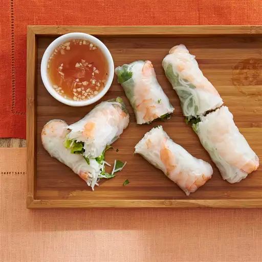

How to make Vietnamese Spring Rolls!

Want to learn how to make the best Vietnamese Spring Rolls you ever had?
Spring rolls are a staple in Vietnamese Cuisine. They are served before meals typically as an appetizer or they will even be served along side your main course dish! They're freshly made, healthy, low-calorie, and very refreshing. Learn how to make them below!
Ingredients Needed
- 2 ounces of Rice Vermicelli
- 8 rice wrappers
- 8 large cooked shrimmp. Peeled, deveined, and cut in half!
- 3 tablespoons of chopped fresh mint leaves
- 3 tablespoons of chapped fresh cilantro
- 1 and 1/3rd tablespoons of fresh Thai basil
Steps on how to make it
Step 1
- Fill a large pot with lightly salted water and bring to a rolling boil; stir in vermicelli pasta and return to a boil. Cook pasta uncovered, stirring occasionally, until the pasta is tender yet firm to the bite, 3 to 5 minutes.
Step 2
- Fill a large bowl with warm water. Dip one wrapper into the hot water for 1 second to soften. Lay wrapper flat; place 2 shrimp halves in a row across the center, add some vermicelli, lettuce, mint, cilantro, and basil, leaving about 2 inches uncovered on each side. Fold uncovered sides inward, then tightly roll the wrapper, beginning at the end with lettuce. Repeat with remaining ingredients.
Step 3
- For the sauces: Mix water, lime juice, sugar, fish sauce, garlic, and chili sauce in a small bowl until well combined. Mix hoisin sauce and peanuts in a separate small bowl.
Final Step
- Serve rolled spring rolls with fish sauce and hoisin sauce mixtures.